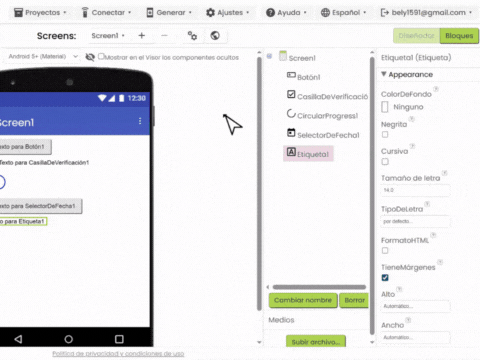
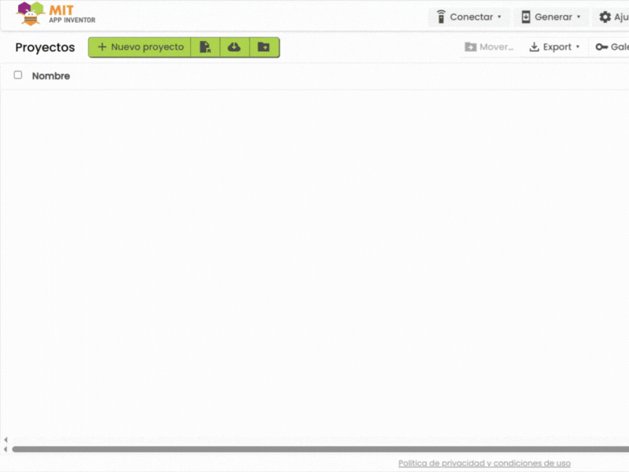
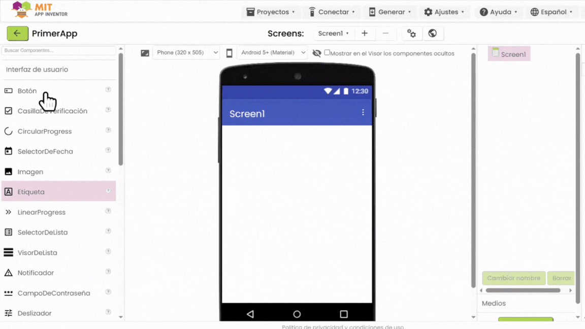
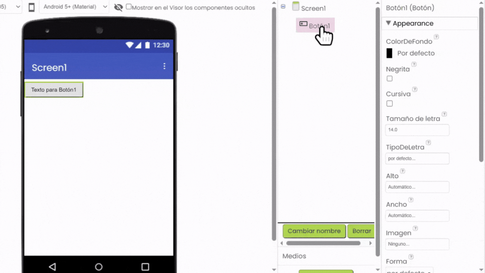
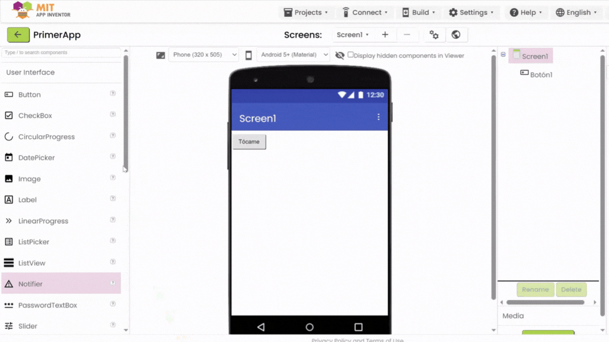
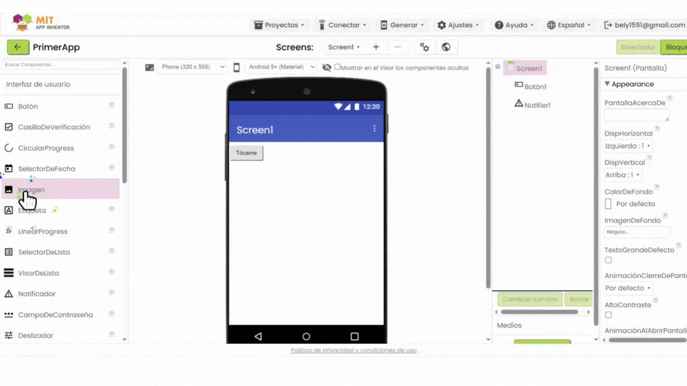
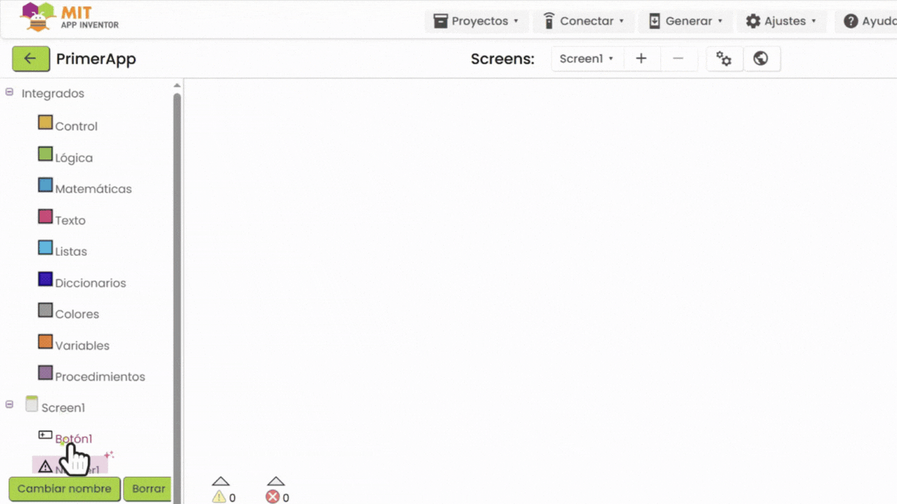
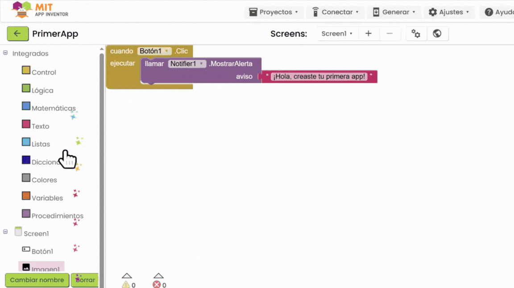
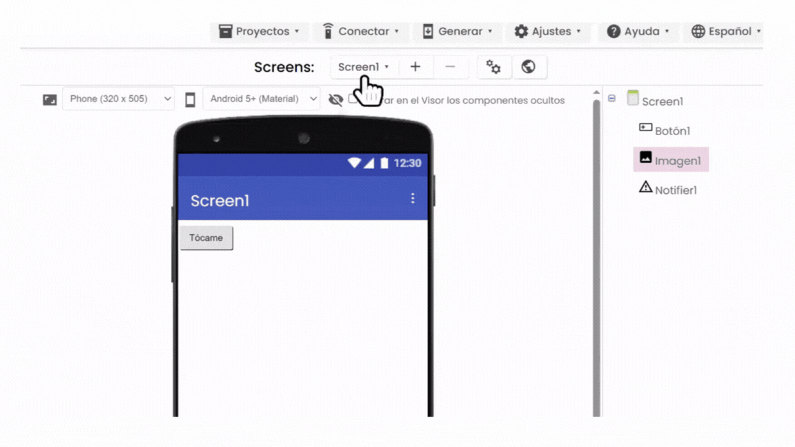

En este tutorial, aprenderás a usar App Inventor para crear una aplicación simple con un botón que muestra un mensaje o una imagen. ¡No necesitas saber programar! Haz clic en cada paso para verlo y usa los botones "Siguiente" o "Volver atrás" para navegar entre temas. Los GIFs te mostrarán exactamente qué hacer.
Paso 1: Conoce la interfaz de App Inventor
El Diseñador
Abre App Inventor en ai2.appinventor.mit.edu con tu cuenta de Google. El Diseñador es donde arrastras botones, imágenes y otros elementos para tu app.
GIF 1: El Diseñador, donde creas la apariencia de tu app.
Los Bloques
Los Bloques son donde programas lo que hace tu app, uniendo piezas como un rompecabezas. Haz clic en el botón "Blocks" para ver esta sección.

GIF 2: El editor de Bloques, donde programas con rompecabezas.
Paso 2: Crea un nuevo proyecto
Haz clic en Start new project y nombra tu proyecto, por ejemplo, "MiPrimeraApp".

GIF 3: Botón para crear un nuevo proyecto.
Paso 3: Agrega componentes al diseñador
En el Diseñador, arrastra un Button desde la paleta de la izquierda (en "User Interface") hasta la pantalla de tu app.

GIF 4: Arrastrando un botón al área de diseño.
Cambia el texto del botón en las propiedades (a la derecha) a algo como "¡Tócame!".

GIF 5: Cambiando el texto del botón en las propiedades.
Para mostrar un mensaje más adelante, agrega un componente Notifier. En el Diseñador, arrastra Notifier desde la paleta de la izquierda (en "User Interface") al área de diseño. No aparecerá en la pantalla, pero es necesario para programar mensajes.

GIF 6: Agregando el componente Notifier al diseño.
Para mostrar una imagen más adelante, agrega un componente Image. En el Diseñador, sigue estos pasos:
Arrastra un componente Image desde la paleta de la izquierda (en "User Interface") al área de diseño. Aparecerá en la pantalla de tu app.
En las propiedades de Image1 (a la derecha), haz clic en el campo "Picture" y selecciona "Upload File".
Sube una imagen desde tu computadora (por ejemplo, una foto en JPG o PNG).
En las propiedades, desmarca la casilla Visible para que la imagen esté oculta al inicio.

GIF 7: Agregando el componente Image y configurando sus propiedades.
Paso 4: Agrega una acción al botón con bloques
Haz clic en Blocks en la parte superior derecha para ir al editor de bloques.
GIF 8: Botón para cambiar al editor de bloques.
Opción 1: Mostrar un mensaje
En el editor de Blocks, sigue estos pasos para que el botón muestre un mensaje emergente:
En la paleta de la izquierda, haz clic en Button1 (bajo "Screen1").
Arrastra el bloque when Button1.Click do al área de trabajo (es un bloque amarillo de la categoría "Control").
En la paleta, haz clic en la categoría Text (color rosado) y arrastra el bloque text string (un bloque rosado con comillas).
Haz clic dentro del bloque text string y escribe "¡Hola, creaste tu primera app!".
En la paleta, haz clic en Notifier1 (bajo "Screen1") y arrastra el bloque call Notifier1.ShowAlert (un bloque morado).
Conecta el bloque text string al espacio "message" del bloque call Notifier1.ShowAlert (encajará como un rompecabezas).
Conecta el bloque call Notifier1.ShowAlert dentro del espacio "do" del bloque when Button1.Click.
Esto hará que al tocar el botón en tu app, aparezca un mensaje emergente.

GIF 9: Bloques para que el botón muestre un mensaje.
Opción 2: Mostrar una imagen
Para mostrar la imagen que agregaste, en el editor de Blocks, sigue estos pasos. Nota: Si ya usaste el bloque when Button1.Click do en la Opción 1, reemplaza su contenido con estos bloques o crea un nuevo proyecto.
En la paleta, haz clic en Image1 (bajo "Screen1") y arrastra el bloque set Image1.Visible to (un bloque morado).
En la paleta, haz clic en la categoría Logic (color verde) y arrastra el bloque true (un bloque verde).
Conecta el bloque true al espacio "to" del bloque set Image1.Visible to.
Conecta el bloque set Image1.Visible to dentro del espacio "do" del bloque when Button1.Click.
Esto hará que al tocar el botón, la imagen aparezca en la pantalla.

GIF 10: Bloques para que el botón muestre una imagen.
Paso 5: Prueba tu app
Abre la app MIT AI2 Companion en tu celular. Escanea el código QR que aparece en App Inventor (botón Connect > AI Companion).

GIF 11: Conectando el celular con el código QR.
Toca el botón en tu app y verifica que aparezca el mensaje o la imagen.
¡Felicidades!
Has creado tu primera aplicación con App Inventor. ¿Qué tal si pruebas cambiar el mensaje o usar otra imagen? ¡Explora otros componentes en la paleta para hacer tu app más divertida!